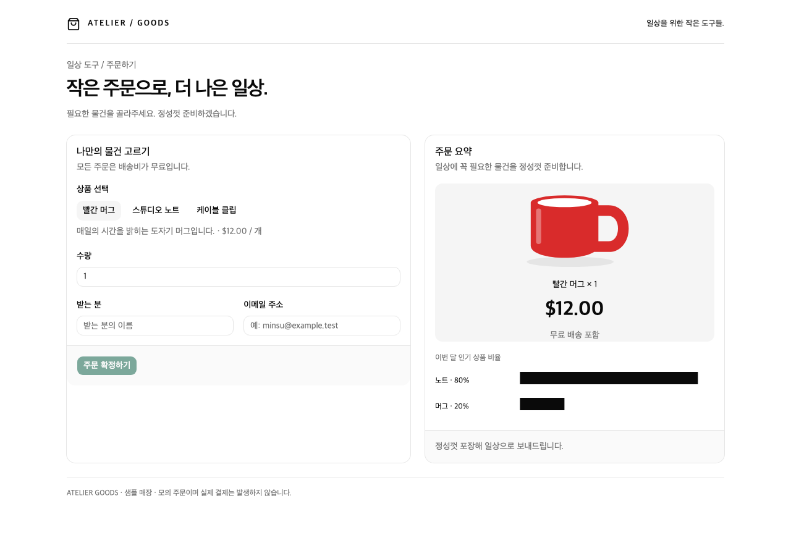
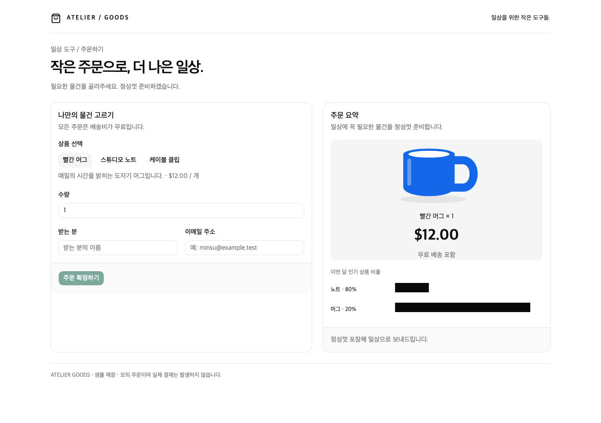
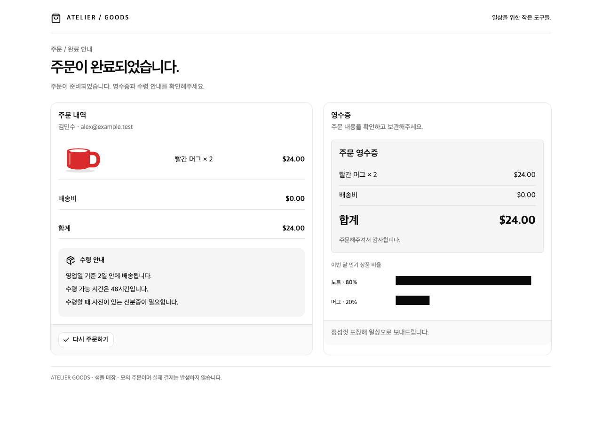
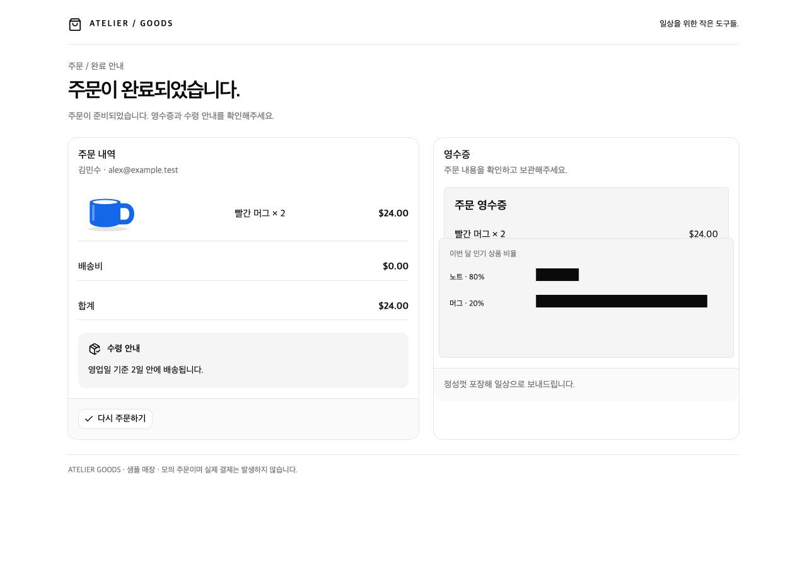

코드 cdd1c16. QA 플랫폼·운영자 설정 없이 직접 방문한 앱의 화면입니다. 테스트 코드는 DOM/CSS를 주입하지 않습니다. 본 페이지는 실제 브라우저 캡처이며 모델 입력·검출 결과는 아닙니다.
정상 앱 열기 · 결함 앱 열기 · 독립 기능 검사·요청 기록 · 플랫폼 종료 후 직접 방문 기록
두 직접 URL와 기존 여섯 상태에서 같은 기능 검사 8/8 PASS. 새 한글 사이트의 실제 Vision 검출은 미검증입니다. 앱을 실행하려면 npm run sample:start를 사용하세요.




결함 버전은 기존 차트의 음수 여백이 영수증과 겹치고 수령 안내 높이가 잘못되어 안내가 잘립니다. 빨간 머그의 이미지 색상과 차트 표시 비율도 앱 소스에서 잘못 렌더링됩니다. 빈 덮개 요소는 제거했습니다. 주문 API와 금액 계산은 정상 버전과 같습니다.